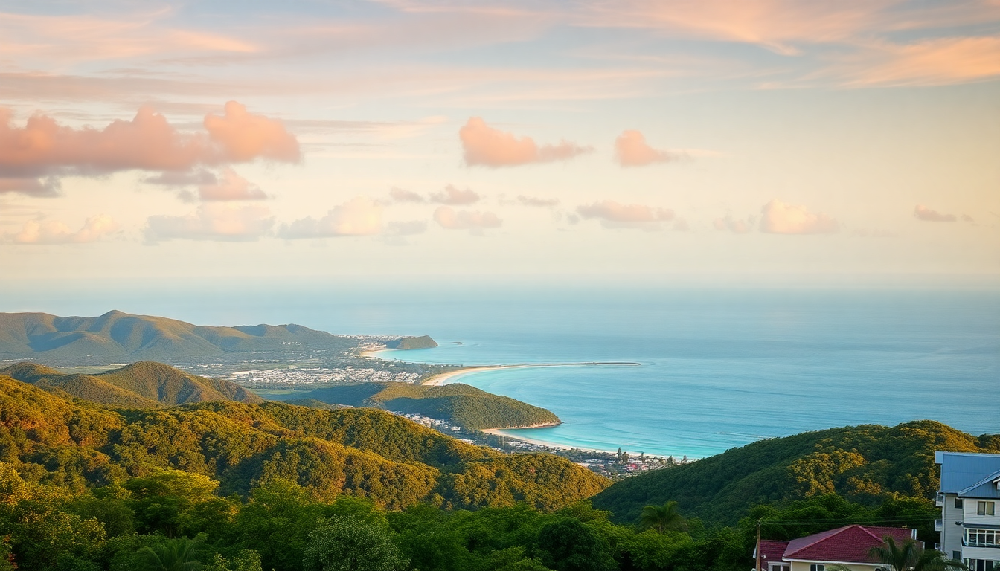

Where to Stay in Cairns: Best Neighborhoods for Every Budget

I spent two weeks bouncing between Cairns neighborhoods, trying to figure out which one actually works for different trip styles. The short answer: it depends on whether you want to wake up next to the reef boats, the rainforest, or a cheap pub. Here’s what I found.
Where Should You Stay in Cairns City Centre?
The Cairns City Centre—bounded by the Esplanade, Lake Street, and Aplin Street—is where most first-timers land. It’s compact, walkable, and everything you need for a reef trip is within ten minutes on foot.
I stayed at Cairns Central YHA on McLeod Street. It’s a backpacker hostel, but the private rooms are clean and the pool is a lifesaver after a day in the heat. For a step up, Cairns Colonial Club Resort on Cannon Street offers a lagoon pool and shuttle bus, though it’s a 15-minute walk from the marina. The Pullman Cairns International on Abbott Street is the premium choice—right on the Esplanade, with a pool that overlooks the inlet.
- Esplanade Lagoon: Free public saltwater pool. Pack a towel and claim a spot by 9am.
- Night markets: On the Esplanade, between Shields and Aplin streets. Overpriced souvenirs, but the food stalls are decent.
- Reef Fleet Terminal: Spence Street. All Great Barrier Reef tours depart from here. Staying within 10 minutes saves you the morning panic.
The downside? It’s touristy. After 8pm, the Esplanade quiets down, and you’re left with a few overpriced restaurants and the Woolshed pub on Shields Street if you want nightlife. If you’re not here for the reef, the city centre feels a bit hollow.
Is Palm Cove Worth the Splurge?
Yes, if your budget allows. Palm Cove is 25 minutes north of Cairns, a strip of high-end resorts and restaurants right on a palm-fringed beach. I spent two nights at Reef House Resort & Spa, which is an adult-only property with a colonial vibe and a swim-up bar. It’s not cheap—rooms start around AU$400 a night—but the service and location justify it.
- Nu Nu Restaurant: On the beachfront. The barramundi with green papaya salad is the standout.
- Palm Cove Jetty: A short walk from the main strip. Good for sunrise photos, but the water is croc territory—don’t swim here.
- Spas: Almost every resort has one. Alma Beachside Spa at the Alamanda does a 60-minute massage that fixed my reef-boat back.
The catch: you’re isolated. There’s no nightlife beyond the resort bars, and you’ll need a car or the Sunbus 110 to get into Cairns for tours or groceries. If you want to do the reef, you’ll be on a bus by 6:30am to catch the boats. Palm Cove is for relaxation, not convenience.
What About Port Douglas for a Quieter Base?
Port Douglas is about an hour north of Cairns, and it’s where I’d send someone who wants a small-town feel with easy reef access. The main drag—Macrossan Street—is lined with boutiques, ice cream shops, and the Court House Hotel for a cold beer. I booked a studio at Port Douglas Peninsula Boutique Hotel on Barrier Street. It’s a 10-minute walk from Four Mile Beach, and the owners gave me a map of local walking trails that most tourists miss.
- Four Mile Beach: Patrolled, swimmable, and usually quiet. I had it almost to myself on a Tuesday morning.
- Low Isles: A 90-minute ferry from Port Douglas. Snorkeling with turtles and clams—less crowded than the outer reef trips from Cairns.
- Market Day: Sundays at Anzac Park. Fresh fruit, local art, and a guy who makes sugarcane juice on the spot.
Port Douglas is pricier than Cairns for accommodation—budget motels start around AU$150, but most places hover above AU$250. You also need a car or the Port Douglas Bus (AU$20 one-way from Cairns) to get here. It’s worth it if you want to avoid the backpacker scene.
Where Should Budget Travelers Stay in Cairns?
For under AU$100 a night, your best bet is the Cairns Esplanade area, specifically the stretch between Minchinton Street and Aplin Street. I stayed at Gilligan’s Backpackers Hotel & Resort on Grafton Street. It’s a party hostel—free pancake breakfast, swim-up bar, and a nightclub downstairs—but the private rooms are soundproofed and clean. If you want quiet, try Cairns Girls Hostel on Lake Street, which is female-only and has a strict no-partying rule.
- Night Owl Night Market: On the Esplanade, open until 11pm. Cheap dumplings and spring rolls for under AU$10.
- Rusty’s Markets: Grafton Street, open Friday to Sunday. Grab a mango smoothie and a bag of lychees for AU$5.
- Public transport: The Sunbus network covers the city centre and northern beaches. A single ride is AU$2.70 with a go card.
The trade-off: budget spots are noisy and close to the pub strip. If you’re a light sleeper, bring earplugs or book at Cairns Central YHA instead—it’s a five-minute walk from the Esplanade but tucked away on a quieter street.
Which Neighborhood Has the Best Food Scene?
The Cairns City Centre wins this, but only by default. The Esplanade boardwalk has a row of restaurants that range from decent (Prawn Star—a boat-turned-seafood-shack) to overpriced (most of the Italian joints). I had my best meal at Ochre Restaurant on Marlin Parade: crocodile wontons and kangaroo fillet, which sounds gimmicky but works.
- Dundee’s Restaurant on the Waterfront: On the Esplanade. The seafood platter for two (AU$89) is the real deal.
- The Raw Prawn: On the Esplanade. Good for a quick prawn roll and a beer.
- Cairns Night Markets: Food court section. I ate a laksa here that beat any restaurant meal I had in town.
Outside the city, Palm Cove has Nu Nu (mentioned above) and Saffron for Indian-Malaysian fusion. Port Douglas has Nautilus Restaurant, which is candlelit and set in a rainforest garden—book ahead. But for variety and price, the city centre edges out.
Is the Northern Beaches Area a Good Alternative?
The northern beaches—Trinity Beach, Yorkeys Knob, and Holloways Beach—are 15 to 25 minutes north of Cairns by car. I spent a night at Trinity Beach Holiday Park, which has cabins starting at AU$120 a night. It’s quieter than the city, with a beach that’s mostly locals and a few cafes.
- Yorkeys Knob Boat Ramp: Good for fishing charters. I did a half-day trip with Top Catch Charters for AU$90.
- Holloways Beach Cafe: On the esplanade. The eggs benedict with smoked salmon is AU$18 and worth the drive.
- Public bus: The Sunbus 110 runs every 30 minutes to Cairns. It takes 40 minutes from Trinity Beach.
The catch: there’s no reef tour departure from these beaches, so you’re commuting into Cairns every day. If you have a car and want to avoid the tourist hordes, it works. Without a car, it’s a hassle.
FAQ
Is it safe to swim at the Cairns Esplanade? No. The Esplanade Lagoon is the only safe swimming spot in the city centre. The ocean itself has crocodiles and box jellyfish (November to May). Stick to the lagoon or patrolled beaches like Four Mile Beach in Port Douglas.
Should I rent a car in Cairns? Only if you plan to explore the northern beaches or drive up to Port Douglas. For the city centre and reef tours, you don’t need one—everything is walkable or a short bus ride. Parking in the city costs around AU$15 a day.
What’s the best month to visit Cairns? June to August. It’s the dry season: low humidity, clear skies, and no stinger season. The water is still warm enough for snorkeling. Avoid January to March—that’s cyclone and rain season.
Conclusion
- Cairns City Centre is the most practical base for reef tours and budget stays—choose it for convenience.
- Palm Cove is the splurge option if you want a resort beach holiday with good food.
- Port Douglas is the quiet alternative for a small-town vibe and easy reef access.
- Northern beaches work only if you have a car and want to avoid crowds.
- Book accommodation near the Esplanade if you’re on a budget—Gilligan’s or Cairns Central YHA are solid options.